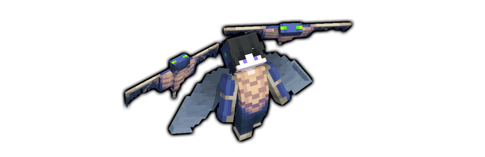
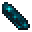

Canopy
爆風と共にファントムの翼を生み出す滑空型移動系イミテイター
エンドシップのエリトラを盗んだファントムが擬態科学により人化した。凄まじい爆風で飛び上がり、天から奇襲を仕掛ける。
イミテイターウェポン
カテゴリー
ウェポントリガー
使用方法と詳細
効果発動時にエリトラを装着し、急上昇して滑空を始める。効果時間が切れるまでエリトラは維持され続けるが、その並外れた機動力と速度ゆえに鎧を着ていたとしても滑空中は強制的に外されてしまう。着地したときにすぐに鎧を着ないといけないため、リスキーなイミテイターでもある。
鎧所持時クールタイム：28秒
鎧未所持時クールタイム：21秒
効果継続時間：6秒